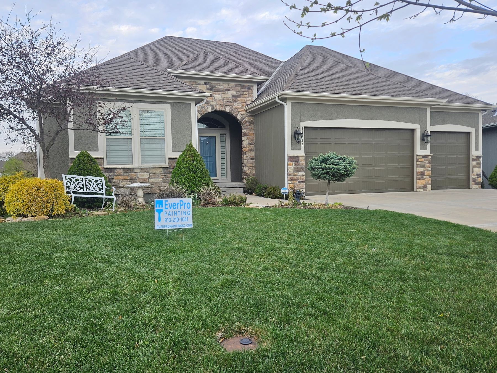

From Old Town ranches to the newer builds around City Center — Lenexa homes are our home turf.
Get Your Free EstimateLenexa is really two cities in one: the established neighborhoods near Old Town with their 60s-80s ranches and cedar siding, and the newer construction spreading west around City Center. We paint both — and they need very different things.
Older Lenexa homes usually need real prep: weathered cedar and hardboard that has to be scraped, sanded, spot-primed, and caulked before it can hold paint again. Newer homes are often about color updates and crisp curb appeal. Either way, the standard is the same — prep first, quality Sherwin-Williams products, and the owner checking the work.

Yes — from Old Town to City Center and out to the newest western subdivisions, plus neighboring Shawnee and Merriam.
Usually, yes. Peeling cedar almost always means the old coating failed — not the wood. We scrape and sand to sound surface, spot-prime, caulk, and repaint with products built for wood movement.
Every home is different — size, stories, and how much prep the surfaces need drive the price. Estimates are free, in writing, and the quoted number is what you pay.
Yes — walls, ceilings, trim, doors, and full cabinet refinishing, with floors papered and rooms masked properly.
Owner-led walkthrough, detailed written quote, a number that holds.
Request a Free EstimateOr call/text 913-210-1041